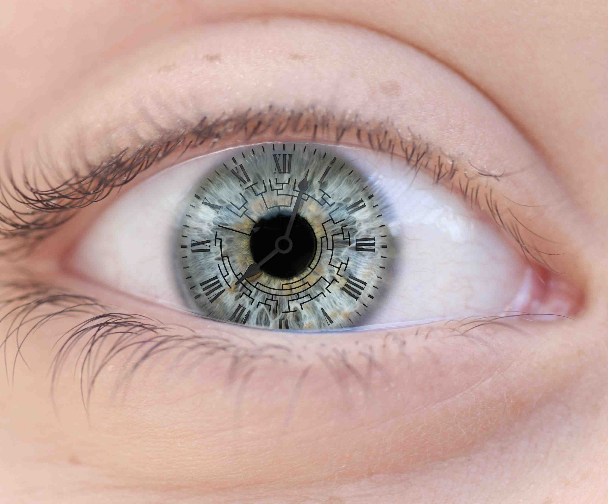
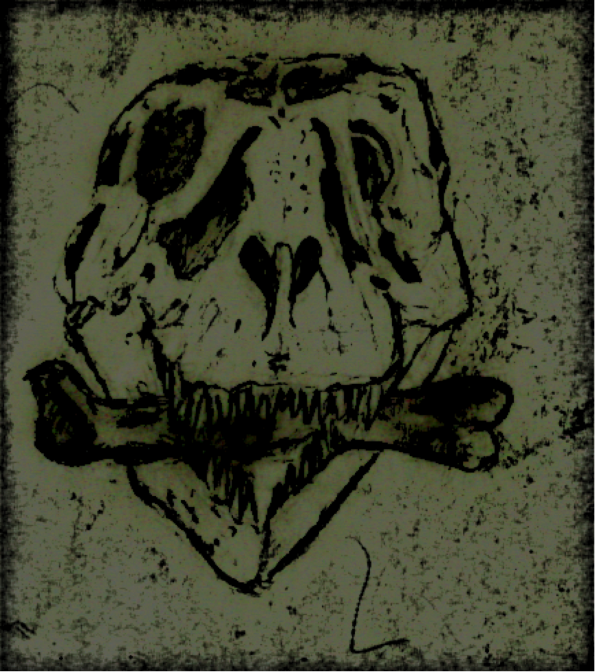
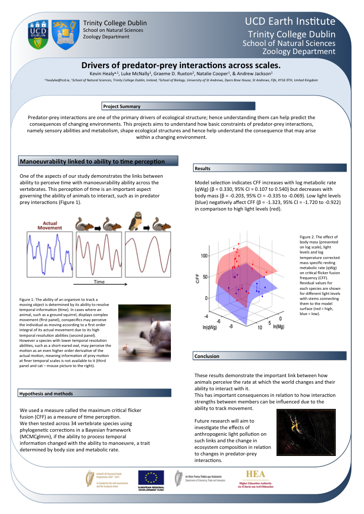

Outreach
Threesis video
Three minutes to explain my thesis!
Outreach Events

Reaserch Night event communicating evolution and ecology research in tcd to the gerneral public
Conference Talks
 "A tail of two extremes" GRS Talk 2014
"A tail of two extremes" GRS Talk 2014 "Dying without Wings" BES steudent Keynote 2014
"Dying without Wings" BES steudent Keynote 2014 Time is in the Eye of the Beholder ESEB 2014
Time is in the Eye of the Beholder ESEB 2014Conference Posters

UCD Earth and Natural Sciences Conference 2014 |

UCD Earth and Natural Sciences Conference 2013 |
EcoEvo@TCD blog
Some contributions to Trinity College School of Natural Science's blog

Biodiversity face off |

And to the victor the spoiled |

Radio Ga Ga Science: a student’s point of view |
 All the better to see you with
All the better to see you with
|